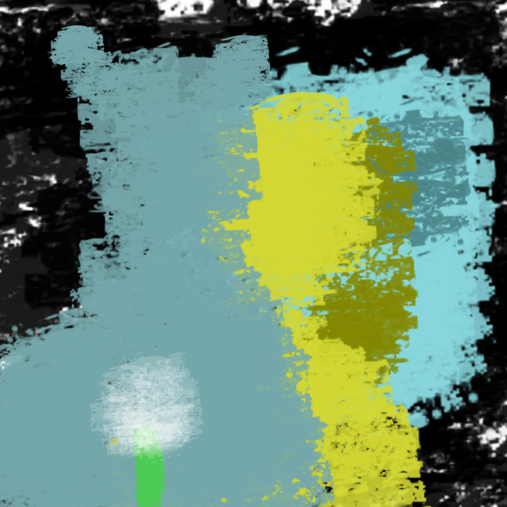

I am free! I am finally free! *You see a fluffy flower on the floor. You remember its name. It is a dandelion. At your first encounter, it was billowing in the breeze, lost and misguided, not fully blossomed. Now, it is at its fullest potential, alive
and planted to the floor, ready for the wind to take it on. Your heart still races from day to day. It feels like you never left the hospital. You suddenly hear a vibrating noise, followed by a loud, obnoxious alarm. You wake up* That was...That
was insane! *You breathe heavily, recovering from your nightmare. You get up, go to the bathroom and wash your face. The blue demon can be seen behind you.*